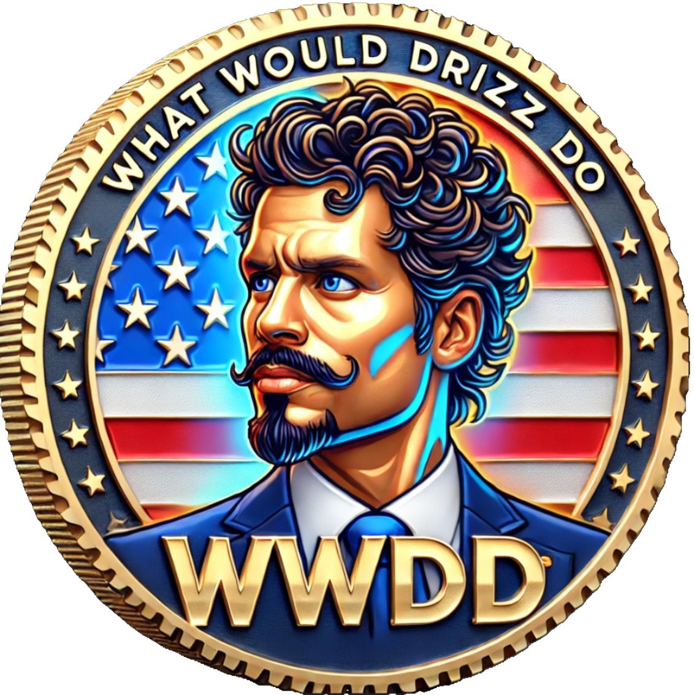

WWDD (What Would Drizz Do) was created as a symbol of integrity, bravery, and justice. It represents the 340 million voices fighting for Constitutional rights, justice, and safety. Built on Solana, a portion of WWDD's funds will provide support for professionals who uphold these values and protect communities every day without recognition.
This project is more than a memecoin—it’s a stand for the people who fight for integrity and justice in the shadows. Your support helps build a stronger community that values honor and freedom.
WWDD is not affiliated with or endorsed by any government agency or individual. A portion of funds may support legal aid initiatives, subject to available resources, operational priorities, and compliance with applicable laws. Participation involves risk. Please consult legal or financial professionals before proceeding.